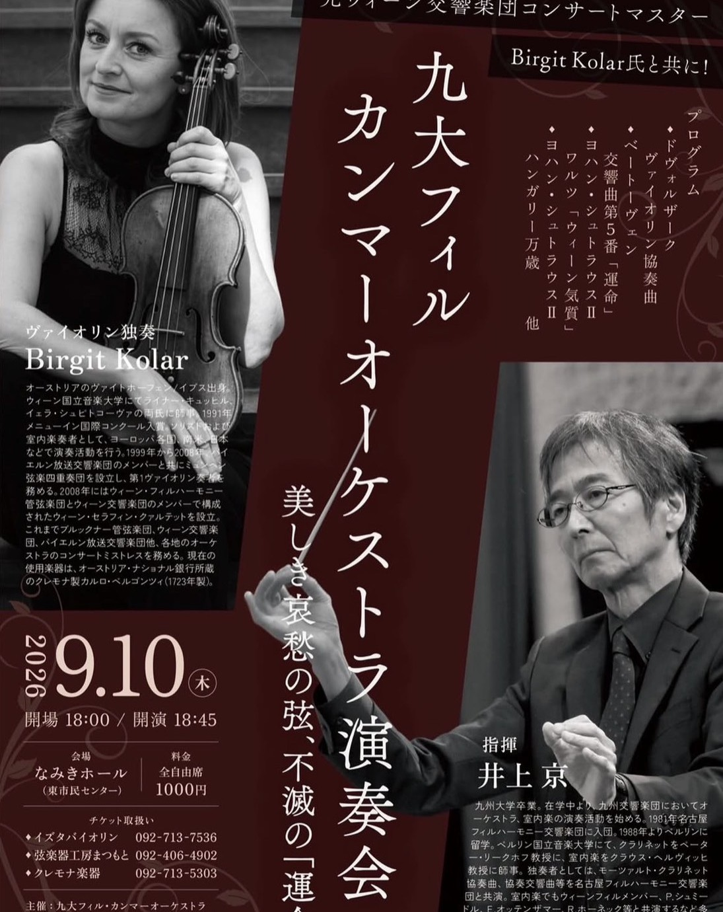
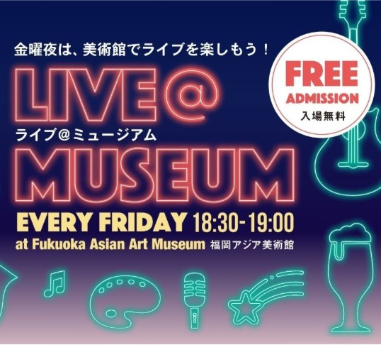
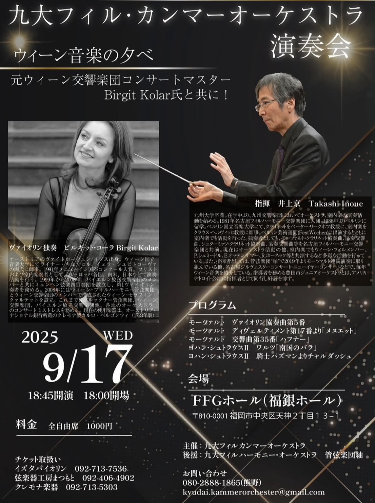

Kyudai-Phil Kammerorchester
九大フィル・カンマーオーケストラは、九大フィル・ハーモニーオーケストラを母体とし、同楽団のメンバーによって構成されている室内管弦楽団です。
大編成のオーケストラでは取り上げにくい古典派の楽曲を中心に演奏することを目的として設立されました。
九州大学OBの井上京氏を指揮者として迎え、小規模編成ならではの緻密なアンサンブルを追求しています。
これまで年に１回、福岡市内のホールにて演奏会を開催しています。
福岡アジア美術館をはじめ、コンサートホール以外でも演奏活動を行っています。
2026年 9月10日（木） | なみきホール

2026年 8月21日（金） | 福岡アジア美術館

2025年 9月17日 | FFGホール
